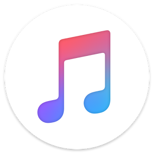

Spotify es una aplicación que permite la reproducción de audio y video por medio del streaming, es decir, la transmisión en continuo de música o listas de música de distintos artistas alrededor del mundo.
Spotify puedes usarla en diferentes dispositivos digitales. Se encuentra disponible tanto en su versión de escritorio como en dispositivos móviles. También, lo puedes usar en la versión web, si no quieres descargar la aplicación. Si usas la versión gratuita, tendrás que escuchar anuncios de forma regular, pero puedes tener la versión Premium por 10 dólares al mes.
Crear una lista de reproducción es tan fácil como hacer clic con el botón derecho en una canción y pulsar "Añadir a lista de reproducción" o hacer clic en los tres puntos que aparecen junto a una canción en la aplicación. Coge tus canciones favoritas y mételas en una lista de reproducción para tu disfrute personal. En cuanto empieces, pronto verás que sigues listas de reproducción creadas por amigos o por artistas.
Spotify también es inteligente: cuanto más escuchas, más aprende el tipo de música que te gusta y eso influye en la música que te presentará en el futuro. Cuando entres en la sección "Inicio" de la aplicación, encontrarás una serie de recomendaciones basadas en tus escuchas recientes. Esto incluye artistas similares a los que ya has estado escuchando, así como tus listas de reproducción"Discover Weekly","Release Radar", "Top Songs of [year]" y "Family Mix", entre otras.
.jpg)

| PLATAFORMAS | CARACTERISTICAS | VENTAJAS | DESVENTAJAS |
|---|---|---|---|
 Spotify | es un servicio de música, podcasts y vídeos digitales en streaming que te da acceso a millones de canciones y otros contenidos de artistas de todo el mundo. Las funciones básicas, como escuchar música, son totalmente gratis, pero también tienes la opción de mejorar tu cuenta con Spotify Premium |
|
|
Youtube Music |
se trata de un servicio de transmisión de música, que cuenta con las prestaciones y características de YouTube; eSso sí, una de sus principales características diferenciales tiene relación con su catálogo de remezclas, presentaciones en vivo (algo que no podemos encontrar en otras plataformas), y acceso a versiones y vídeos musicales |
|
|
Amazon Music |
Amazon Music ofrece diferentes planes, incluyendo una versión gratuita con anuncios limitada, una versión ilimitada sin anuncios y una versión premium que incluye acceso a transmisiones de alta calidad y capacidad para descargar canciones y álbumes para escuchar sin conexión a Interne |
|
|
Apple Music |
Apple Music es un servicio de transmisión de música en línea que ofrece acceso a millones de canciones y álbumes de diferentes géneros. Es propiedad de Apple Inc. y está disponible en múltiples plataformas, incluyendo dispositivos Apple como iPhone, iPad, iPod touch, Mac y Apple TV, así como en dispositivos Android y en la web. |
|
|
Deezer | Deezer es un servicio de transmisión de música en línea que ofrece acceso a una amplia biblioteca de canciones y álbumes. Fue fundado en 2007 y tiene su sede en París, Francia. Deezer está disponible en más de 180 países y ofrece planes de suscripción mensuales a precios razonables. |
|
|
Esound |
Es un centro multimedia multiplataforma que simplifica la administración, presentación y reproducción de videos de YouTube (u otros contenidos gratuitos de plataformas de terceros) mediante el uso de una interfaz sencilla y fácil de usar. ¿Te gustaría saber más sobre eSound? |
|
|
Para las personas interesadas en pertenecer a nuestra comunidad en espotify en donde compartimos playlist y todo tipo gustos en generos musicales, caciones y demás en el menú principal de la pagina encontrará los botones que lo llevará al login y al formulario de registro.